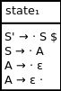
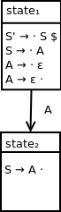

Handling end of string
After reducing A to S, from state1, we want to process the end of string according to our standard approach.
Extending our DFA, we end up with a final diagram of:
![DFA containing four states. State 1 contains the following productions: S prime produces dot S $, S produces dot A, A produces dot ε, A produces ε dot. State 2 contains the following production: A produces A dot. State 1 transitions to state 2 on nonterminal symbol A. State 3 contains the following production: S prime produces S dot $. State 1 transitions to state 3 on nonterminal symbol S. State 4 contains the following production: S prime produces S $ dot. State 3 transitions to state 4 on end of string symbol $. State 4 is an accepting state.](assets/epsilonproductionchaindfa4parsestates.png)
We've seen the process for constructing and LR(0) DFA for a grammar containing a production chain that derives terminal.
In this section, we will expand this process to handle a grammar containing a production chain that derives ε, the empty string.
The language we will be analzying is specified by the following grammar:
S → A
A → ε
This grammar has the following augmented grammar:
S' → S $
S → A
A → ε
This grammar has the following LR(0) parse table:
| $ | S | A | S' | |
| state1 | reduce3 | goto3 | goto2 | |
| state2 | reduce2 | |||
| state3 | accept |
Parsing input string ε:
| Input queue | Parse stack | Action |
|---|---|---|
| 1 | Apply action of reduce3 which corresponds to state1 and $ in our parse table | |
| 1 A | Apply action of goto2 which corresponds to state1 and A in our parse table | |
| 1 A 2 | Apply action of reduce2 which corresponds to state2 and $ in our parse table | |
| 1 S | Apply action of goto3 which corresponds to state1 and S in our parse table | |
| 1 S 3 | Accept, since this action corresponds to state3 and $ in our parse table |
As per our standard process, we will construct our initial qualified production rule.
Our initial set of qualified productions is:
{S' → · S}
Calculating the closure set, we end up with:
{S' → · S, S → · A, A → · ε, A → ε ·}
In this case, we are able to move the dot past the ε symbol because no input symbol needs to be processed in doing so.
As a result, our initial parse state is:
Observe the following sequence of parse stack states encountered in the parsing example above:
In this language, because the production A → ε does not produce a terminal, we don't need to shift any terminals onto the stack before applying the reduction.
As a result, we can apply the actions of reduce followed by goto right away.
Starting with the following qualified production from state1:
S → · A
we can shift the dot past nonterminal A and state state2 with the following production set:
{S → A ·}
Since the dot is at the end of the production, this closure can't be further expanded. As a result, state2 can be represented as:
We can represent this transition into state2 with the following DFA:
Once state2 is reached, nontermal A can be reduced to S, and we can return to state1.
After reducing A to S, from state1, we want to process the end of string according to our standard approach.
Extending our DFA, we end up with a final diagram of:
We've seen the LR(0) DFA construction process for a grammar that derives the empty string, ε through a production chain.
Next, we will investigate the DFA contruction for a grammar containing a production that produces multiple nonterminal symbols.
GitHub Repository: https://github.com/bprollinson/ripal
Copyright © 2017 Brendan Rollinson-Lorimer